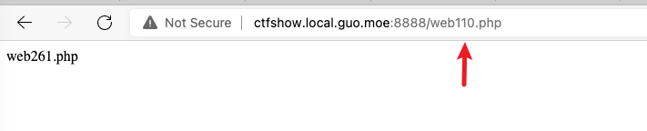
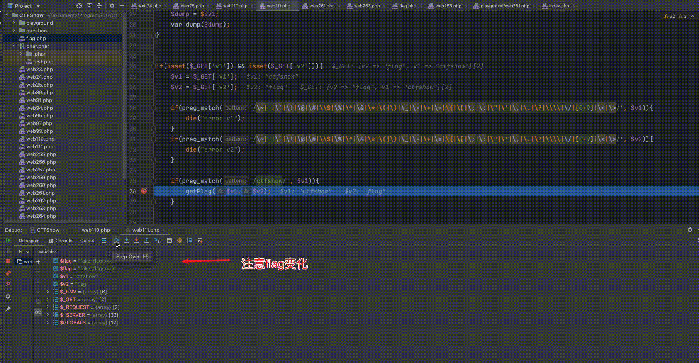

web110
PHP Version: 7.3.11
仍未解决
知识点
- 对 PHP 原生类的运用
做题
从这题可以看出，这里考察的是对PHP原生类和原生函数的结合运用，但由于我也没啥知识储备，所以还是得先翻一下资料，顺便看一下hint
想写下列代码尝试一下，利用 FilesystemIterator 获取指定目录下的所有文件，但是不知道为什么只返回了一个文件名？为什么在这题就可以返回flag的txt，如果恰好flag的名字不在第一个怎么办？
1 |
|
令我更不明白的是，为什么我这里调用的是 web110.php，他给我返回了一个 web261.php？

参考资料
- https://www.extrader.top/posts/35c0085d/ php原生类利用
- https://www.php.net/manual/zh/refs.basic.other.php PHP 基本扩展
web111
PHP Version: 7.3.11
知识点
- 变量覆盖
做题
我原本想的是 v1 = ctfshow, v2 = flag 的，执行后发现为null，于是就逐个断点调试看看是什么情况。

可以看到，这个 $flag 进来以后就没了，那怎么办呢，其实 $flag 在外部已经被定义了，所以他算是一个全局变量，只要我们查看 GLOBALS 的值即可拿到 flag，也就是说 v1 写 ctfshow，v2 写 GLOBALS。
web112
知识点
PHP Version: 7.3.11
- 函数绕过
- PHP 伪协议读取文件
做题
首先可以看到，这里面过滤了 ..|http|https|data|input|rot13|base64|string ，如果没有这个，可以考虑用 http://127.0.0.1/flag.php 来绕过。其他绕过方式也可参考参考资料[1]。
然后我们看到 is_file($file) 这里做了一层判断，也就是说不能直接读取文件，不过我们可以借此判断是否存在文件。输入 /?file=/var/www/html/flag.php 返回 hacker! 代表存在该文件。
根据官方提示以及参考资料[2]，我们可以通过以下几种方式获取文件
1 | php://filter/resource=flag.php |
前三种方式不乏都是通过 PHP 流过滤器加上各种转换（见参考资料[3]）与最终 resource=flag.php 拿到 flag，最后一种则是通过压缩流与调取本地文件拿到
并且看起来 read= 可以忽略，主要是看转换，更多过滤器可见参考资料 [4]
不过最后一种在 highlight_file 遇到以后是会自动解压吗？不是很懂
参考资料
- https://www.cnblogs.com/wjrblogs/p/12285202.html CTF中常用的php伪协议利用
- https://www.php.net/manual/zh/wrappers.php.php php:// — 访问各个输入/输出流（I/O streams）
- https://www.php.net/manual/zh/filters.convert.php 转换过滤器
- https://www.php.net/manual/zh/filters.php 可用过滤器列表
- https://www.php.net/manual/zh/wrappers.compression.php
web113
PHP Version: 7.3.11
知识点
- 函数绕过
- PHP 压缩流协议使用
- 多次软链接绕过 is_file()
做题
非预期解
细节其实和上题差不多，只不过 filter 被限制使用了，还是可以用压缩流来绕过。
但我不明白，为什么不能用 zip:// 和 bzip2:// ，只能用 zlib2:// ?
zlib: 的功能类似 gzopen()，但是 其数据流还能被 fread() 和其他文件系统函数使用。 不建议使用，因为会和其他带“:”字符的文件名混淆； 请使用 compress.zlib:// 替代。
预期解
经过20次软链接可以绕过 is_file()
/proc/self/root/proc/self/root/proc/self/root/proc/self/root/proc/self/root/proc/self/root/proc/self/root/proc/self/root/proc/self/root/proc/self/root/proc/self/root/proc/self/root/proc/self/root/proc/self/root/proc/self/root/proc/self/root/proc/self/root/proc/self/root/proc/self/root/proc/self/root/proc/self/root/proc/self/root/var/www/html/flag.php
原来还有 /proc/self/root 软链接这种方法，学到了
web114
PHP Version: 7.3.11
知识点
- 函数绕过
- PHP 伪协议读取文件
做题
这题拦截了 compress，拦截了convert，但又不拦截 filter 了，奇怪。
php://filter/resource=flag.php
web115
PHP Version: 7.3.11
代码
1 |
|
知识点
- 通过 \f 绕过 is_numberic() 与 trim()
做题
首先我们分析题目，此处将十六进制和八进制的方法给pass掉了，所以无法使用十六进制或八进制来直接绕过。其次，此处使用了 is_numeric 与 trim 来判断。is_numeric 用于判断是否为数字，通过 trim 过滤字符，trim 的语法见下

is_numeric函数在开始判断前，会先跳过所有空白字符。可是题目获取$req[‘number’]的时候明明使用trim过滤了空白字符这时候我们可以引入\f（也就是%0c）在数字前面，来绕过最后那个is_palindrome_number函数，而对于前面的数字判断，因为intval和is_numeric都会忽略这个字符，所以不会影响。
————————————————
版权声明：本文为CSDN博主「EvilGenius-」的原创文章，遵循CC 4.0 BY-SA版权协议，转载请附上原文出处链接及本声明。
原文链接：https://blog.csdn.net/qq_36609913/article/details/79296052
所以，我们只需要在36前面添加 %0c 即 \f 的 urlencode 即可绕过，
参考资料
- https://blog.csdn.net/qq_44657899/article/details/109731923 ctfshow-web115（\f绕过is_numberic()+trim()）
- https://blog.csdn.net/qq_36609913/article/details/79296052 PHP代码审计(绕过过滤的空白字符)
web123
PHP Version: 7.4.9
做题
思路错了。。我一开始在想怎么给 fl0g 赋值为 flag_give_me，但完全没有想到在eval可以直接echo一个$flag。。。
我们按照代码的判断条件来操作，结果最后发现 POST 上去的小数点 . 被转换为了下划线 _

注意:
变量名中的点和空格被转换成下划线。例如 变成了 $_REQUEST[“a_b”]。
那有什么办法呢？结果后来发现，原来[也会被转换，PHP会将 [ 转换为 . 这不刚好应了我的意吗？
1 | <input name="a.b" /> 转为: $_REQUEST["a_b"] |
按照题目，第一个 [ 会被置换为下划线，之后的.就不会被转换，因此该题中 CTF_SHOW.COM 的参数应为 CTF[SHOW.COM
所以最后请求参数为
1 | curl --location --request POST 'http://ef9d0de2-60eb-49b4-a94d-58f30c185f81.challenge.ctf.show:8080/' \ |
参考资料
- https://blog.csdn.net/weixin_45551083/article/details/110574834 CTFShow web入门123-150 (php特性(二))
- https://www.freebuf.com/articles/web/261802.html php代码审计前奏之ctfshow之php特性
- https://www.php.net/manual/zh/language.variables.external.php
- https://segmentfault.com/a/1190000019633304?sort=votes
web125
PHP Version: 7.4.9
知识点
- 在eval中调用函数，使用其他变量来绕过检查。
做题
我们其实可以在eval的参数中再eval其他变量，例如这样： eval($_GET[0]) ，然后再设置参数0为 echo $flag;，不就可以了嘛？
请求参数：
1 | curl --location --request POST 'http://99fb334d-dd4f-40a2-8baf-f0f0015d457f.challenge.ctf.show:8080/?0=echo $flag;' \ |
web126
知识点
- 使用 parse_str 将字符串解析成多个变量
做题
草，前面没提到这个 $a=$_SERVER['argv']; 我都忘了有这个东西了，还以为发挥作用的是 ?a=1+flag=xxx 这么厉害呢。。。
由题目，我们可以使用变量覆盖来使变量 $fl0g 的值为 flag_give_me ，但我们又不能直接传入 $_GET ，那怎么办呢？
刚好由 hint，我发现题目传入的参数是 /?a=1+fl0g=flag_give_me ，我还在好奇为什么不能用 & 而需要用 + ，经过下面的分析就明白了。
使用 + 时，argv会被分成两个，分别为 a=1 以及 fl0g=flag_give_me，而此时 $_GET 只有一个数组成员。

但我使用 & 时，argv还是回被分成2个，$_GET 此时就会变为两个，会被判断条件 !isset($_GET['fl0g']) 所拦截。
parse_str
提交 fun 设置为 parse_str($a[1]) 即可获得flag，请求参数如下
1 | curl --location --request POST 'http://5f2c6d41-ccf6-48c6-a373-f554ec454ebd.challenge.ctf.show:8080/?a=1+fl0g=flag_give_me' \ |
assert
这个函数的作用，有点类似于eval？但我就不明白了，你小米把我内测资格取消掉，还把我的内测分把300多分扣到55分，你是傻的吗！
为什么eval不行？它碰撞到了哪个正则规则吗？
在assert内允许不是分号结尾的语句，例如 assert(‘$a=test’);，但是eval内必须要为分号结尾，所以将assert改为eval时，还需要把 GET 参数 fl0g 中的flag_give_me 后面添加分号，这样就可以拿到flag了。
请求参数如下
1 | curl --location --request POST 'http://5f2c6d41-ccf6-48c6-a373-f554ec454ebd.challenge.ctf.show:8080/?$fl0g=flag_give_me' \ |
参考资料
- https://www.php.net/manual/zh/function.parse-str.php parse_str — 将字符串解析成多个变量
- https://www.php.net/manual/zh/function.assert.php assert — 检查一个断言是否为 false
- https://www.0x002.com/2018/变量覆盖漏洞学习及在webshell中的运用/
web127
PHP Version: 7.3.11
做题
这里面， $_SERVER[‘QUERY_STRING’] 会提取出请求 URL 中 /? 后的参数，也就是 GET 参数的 urlencode 版。但是，由于下划线被waf阻止，我们似乎不能直接使 ctf_show 的值为 ilove36d （说起来这ctfshow的创始人是不是有什么特殊的xp天天喜欢36d的
上回书说道，彼时的璃月
我们在web123中提过，某些字符可以被转换。所以，参照该表，我们还可以用的字符为空格。
最后请求参数为
1 | curl --location --request GET 'http://08c6da10-0dd4-4d75-b0f7-8d3e70f950c6.challenge.ctf.show:8080/?ctf show=ilove36d' |
web128
PHP Version: 5.6.40
代码
1 | <?php |
知识点
- 对 _() 函数的了解与使用
做题
在 PHP 中，启用了 gettext 扩展的 PHP 程序上，直接调用 () 方法等同于调用 gettext()，也就是说，调用 (“hello”); 会使 PHP 返回 hello 字符串。同时，在此题中使用 get_defined_text 可以获得被定义的变量。由于此处 check() 不允许变量 f1 携带任何字母和数字字符，所以只能从f2进行下手。
在此题中，也就等同于只能访问一个方法使得其获得flag。我们可以使用 /?f1=_&f2=get_defined_vars 来获得 flag
其他问题
- 有没有只通过一个函数来getshell的方法，比如说匿名函数？
- 有没有可以通过一个函数+一个参数，但是关键的控制函数（如eval，system等）被限制使用来getshell的方法？